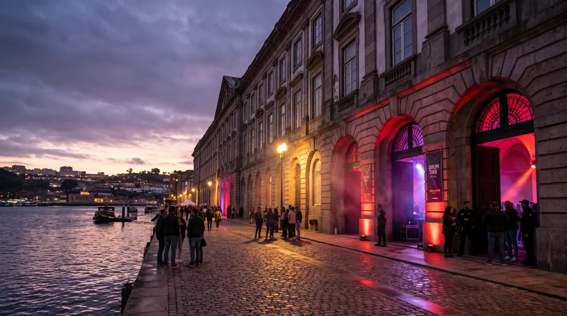
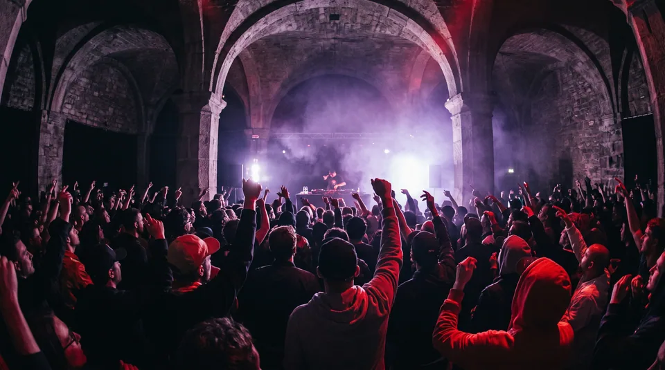
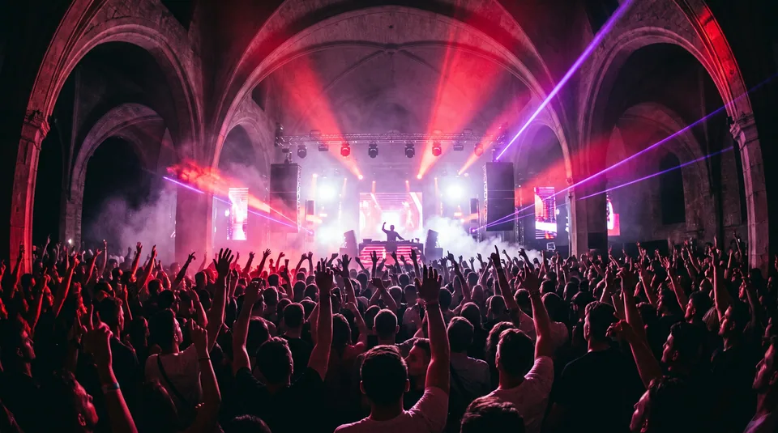

Os 4 Palcos Acústicos da Alfândega
A Alfândega do Porto oferece uma topografia sonora singular: das margens abertas do Rio Douro às abóbadas subterrâneas de granito maciço. Observe como as secções abaixo são delimitadas por divisórias com morfismo animado em tempo real.
Palco Rio Douro
Instalado sobre o cais fluvial com vista direta para a margem de Gaia. Concebido para frequências sub-graves ultra-profundas e kits de bateria acústica de grande porte, permitindo que a brisa noturna do Atlântico e a água amplifiquem a ressonância natural dos bombos.
- ⚡ Capacidade: 6.000 pessoas ao ar livre
- 🥁 Destaque: Baterias duplas frente a frente
- 🌊 Acústica: Dissipação natural sem eco de retorno


Arcos da Alfândega
As históricas galerias de granito do século XIX funcionam como gigantescas câmaras de ressonância natural. As paredes de pedra maciça produzem um atraso acústico curto e cortante, ideal para sintetizadores percussivos modulares, sequências industriais e batidas cruas de caixa.
- ⚡ Capacidade: 2.500 pessoas
- 🧱 Material: Granito puro do Porto
- 🎛️ Destaque: Muros de sintetizadores modulares Eurorack
Octágono Vinil
Uma arena octogonal imersiva com o DJ posicionado exatamente no centro sobre uma plataforma giratória de pratos mecânicos. O público rodeia os artistas a 360 graus, experienciando o som quadrifónico distribuído por oito torres de alta fidelidade.
- ⚡ Capacidade: 1.800 pessoas
- 🎧 Sistema: Áudio quadrifónico 8.2 canais
- 🔄 Setup: 4 gira-discos Technics SL-1200MK7 sincronizados

Morfismo Sem Contagem de Vértices com clip-path: inset()
O comando clip-path: inset(... round ...) permite interpolar qualquer retângulo em cápsula ou círculo com cantos arredondados sem discrepância de vértices entre navegadores:
Invariância de Vértices em clip-path: polygon()
A Regra de Ouro do Morfismo CSS: Para que uma transição entre polígonos ocorra suavemente a 60/120 fps sem saltos bruscos, ambas as formas têm de possuir rigorosamente o mesmo número de vértices ($N = 8$). Nas formas retas (como o corte angular e a linha plana), inserem-se vértices colineares para manter a contagem idêntica.
/* 1. Forma Onda Harmónica (8 Vértices) */
--poly-wave: polygon(0% 0%, 15% 4%, 30% 0%, 50% 5%, 70% 1%, 85% 6%, 100% 0%, 100% 100%, 0% 100%);
/* 2. Forma Dente de Serra (8 Vértices) */
--poly-sawtooth: polygon(0% 0%, 20% 6%, 40% 0%, 60% 7%, 80% 0%, 90% 6%, 100% 0%, 100% 100%, 0% 100%);
/* 3. Forma Linha Plana (8 Vértices Colineares a 0%) */
--poly-flat: polygon(0% 0%, 20% 0%, 40% 0%, 60% 0%, 80% 0%, 90% 0%, 100% 0%, 100% 100%, 0% 100%);
/* 4. Transição Acelerada por Hardware na GPU */
.stage-section-divider {
clip-path: var(--active-polygon);
transition: clip-path 500ms var(--ease-spring);
will-change: clip-path;
}